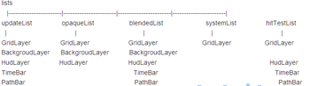

Android Gallery3D源码分析（二)
lists 的各个 list 里包含的各个 layer 如下所示：

Layer提供了update(....)，renderOpaque(....)，renderBlended(....)接口，这些接口会在RenderView的onDrawFrame绘制代码中被调用。GridLayer 中有个 GridDrawManager，专门负责绘制，在前面的那几个接口中会调用到GridDrawManager的一些具体绘制函数实现真正的画图工作如：
drawDisplayItem(view, gl, displayItem, texture, PASS_THUMBNAIL_CONTENT,placeholder, displayItem.mAnimatedPlaceholderFade); 画缩略图的drawDisplayItem(view, gl, displayItem, texture, PASS_FOCUS_CONTENT, null,0.0f);画单张图片的
drawDisplayItem(view, gl, itemDrawn, textureToUse, PASS_FRAME, previousTexture,ratio);画边框的
drawDisplayItem(view, gl, displayItem, textureString, PASS_TEXT_LABEL, null,0);画文本标签的
drawDisplayItem(view, gl, displayItem, textureToUse, PASS_SELECTION_LABEL,null, 0);画选中标记的
drawDisplayItem(view, gl, displayItem, videoTexture, PASS_VIDEO_LABEL, null,0);画视频标记的
drawDisplayItem(view, gl, displayItem, locationTexture, PASS_LOCATION_LABEL,null, 0);画位置标记的
drawDisplayItem(view, gl, displayItem, locationTexture, PASS_MEDIASET_SOURCE_LABEL,transparentTexture,0.85f);画源来源图标的(相机或一般文件夹)
事件机制
由于所有界面都同属于一个activity，所以所有的事件触发动作都来源于主线程，实际上是主线程中的RenderView的onTouchEvent:
// Ignore events received before thesurface is created to avoid// deadlocking with GLSurfaceView'sneedToWait().
if (mGL == null) {
return false;
}
// Wait for the render thread toprocess this event.
if (mTouchEventQueue.size() > 8
&& event.getAction() == MotionEvent.ACTION_MOVE)
return true;
synchronized (mTouchEventQueue) {
MotionEventeventCopy = MotionEvent.obtain(event);
mTouchEventQueue.addLast(eventCopy);
requestRender();
}
return true;
在这里它将所有的触屏事件放在一个待处理的事件队列里面，当队列里面的事件数大于8或者该事件属于拖动事件的时候它将等待，否则会将该事件加入队列，并调用requestRender()请求绘制。于是会重新调用RenderView的onDrawFrame绘制代码，其中有个函数processTouchEvent()，这个函数的主要功能是负责处理事件队列中的事件，查找该事件来源于哪个控件(对应具体的某个Layer子类)，然后将事件分发给该控件处理，控件接受到事件的时候会调用自身的onTouchEvent()函数，在这里会根据事件的不同设置一些不同的数据主要是给绘制的时候要用的，最终会调用到真正的事件处理类GestureDetector.Java的相关方法包括对是否是双击阿单击阿等。在这里需要说明一下，它并没有把响应事件的具体实现放在每个layer的子类中，而是提取出了一个类GestureDetector.Java专门负责响应事件。以上就是整个事件的响应流程，事件统一由RenderView负责创建，然后根据条件的不同下发给相应的控件响应。
切换界面流程
相册界面，缩略图界面，以及图片浏览界面等，这些界面的跳转不同于activity之间的跳转，因为它们并不是每个都对应一个单独的activity而是共享一个activity。Gallery3D里面用不同的状态来标识不同的界面，这些状态定义在GridLayer里面如下：
public static final int STATE_MEDIA_SETS = 0;public static final int STATE_GRID_VIEW = 1;
public static final int STATE_FULL_SCREEN = 2;
public static final int STATE_TIMELINE = 3;
状态的变化引起界面的变化，Gallery3D里面采用了通知模式，状态变化的接口为GridLayer中的public void setState(int state)，通知接口为HudLayer中的public void onGridStateChanged()。界面的切换是由事件发起的，因此在事件的响应函数里面会对用户的触屏动作分解成一个个的状态，如刚进入Gallery3D的时候会通过调用setState(STATE_MEDIA_SETS)设置状态为STATE_MEDIA_SETS，并发送通知即调用onGridStateChanged()最后调用HudLayer的updateViews()方法进行绘制与更新，从而进入相册界面；同样当用户点击相册的时候，会改变状态为STATE_GRID_VIEW，然后重新绘制界面进入缩略图界面，其他界面的切换也是同样的道理，当状态没有发生变化的时候将不会执行回调函数setState()和onGridStateChanged()。